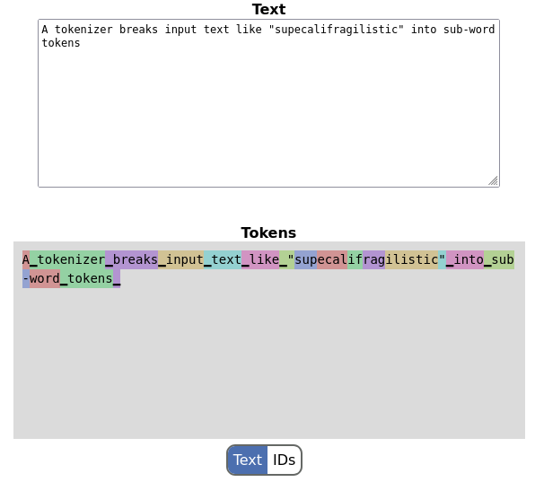

Earlier this year I wrote a post about implementing BPE tokenization in Go, which made it possible to reproduce OpenAI's tokenizer.
Today I want to mention a new project I've been hacking on recently: go-sentencepiece - a pure Go implementation of the SentencePiece tokenizer that's used for Google AI's models like Gemma and Gemini. SentencePiece has a canonical C++ implementation and Python bindings (using SWIG). While it's not too hard to wrap the C++ code with cgo, in some cases a C compiler dependency isn't desirable, so a pure Go solution may be useful. This is what go-sentencepiece is for.
A disclaimer: while SentencePiece contains implementations for both BPE and Unigram tokenizers, go-sentencepiece only implements BPE because this is the one use in practice by models. Also, go-sentencepiece doesn't implement the training phase of the tokenizer, only encoding & decoding. For training, feel free to review my previous post.
There are a couple of ways in which SentencePiece works differently from OpenAI's variant of BPE:
- The text is not pre-split by whitespace using a regexp; instead, whitespace is considered just another part of the input and has its own tokens. You can even see it in the screenshot above - it's marked by the "fat underscore" character (U+2581). While single-space runes are usually part of the next non-space token, multi-space tokens exist as distinct tokens.
- Instead of being configured by just a vocabulary and a regexp, SentencePiece tokenizers have a whole protobuf for configuration, with many options. go-sentencepiece only supports the set of options used for Google AI's models, but more can be added easily.
The whitespace difference turns out to play a crucial role in performance. My original BPE implementation was fairly naive, using simple quadratic algorithms for encoding; this was OK, because these algorithms were working on one word at a time, so the N was very small.
This is no longer sufficient for SentencePiece, however, since the length of the full text is N. Therefore, the implementation adopts some more sophisticated algorithms from the C++ SentencePiece codebase; in particular:
- To match a prefix of a long string from a set of candidates, we use a trie data structure. The prefixmatcher package implements this and may be generally interesting.
- To figure out which pair of tokens to try merging next, we use a heap-based priority queue; this is implemented in the generic priorityqueue package.
While I didn't spend much time in micro-optimizing the implementation, these algorithmic improvements sped up the encoder by about 100x compared to a naive approach, and it's now so fast that I don't think it will ever be a bottleneck in reality.
Config and set up
As mentioned earlier, SentencePiece is configurable with a protobuf file. There are two parts to this: first is a .proto file defining the schema of the protobuf. This is vendored into my repository, copied from the C++ SentencePiece repository. The .pb.go file is also in the tree so you don't need to run the protobuf compiler unless the .proto changes.
The second part is the protobuf itself, which contains the tokenizer vocabulary and a bunch of configuration options. This can be downloaded from the official Gemma repository. go-sentencepiece should be able to load this file.
Online demo
As before, I've implemented an online demo of this tokenizer by compiling it into WebAssembly and adding some HTML+JS scaffolding around it. This is where the screenshot above is from.
You can play with it here: https://eliben.github.io/go-sentencepiece/ (the model protobuf is quite big though, so this page may take a few seconds to load if you have a slow connection).